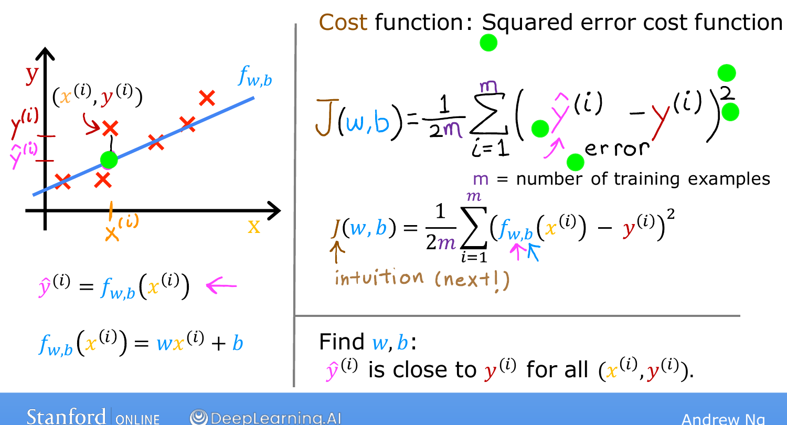

The Cost Function¶
Course 1 · Week 1 · AI-generated study aid — not authoritative; trust the lecture & cited sources.
To train a model you need two things: a way to measure how well it's currently
doing, and therefore a target to improve against. That measure is the cost
function, and building it is the first real step that turns linear regression
from a static equation into something that can learn. The cost function will
tell us how well the model is doing so we can try to get it to do better. [00:00]
The model and its parameters [00:19]¶
Recall the setup: a training set of input features \(x\) and output targets \(y\), fit with the linear model
The two values \(w\) and \(b\) are the parameters of the model — the variables you
adjust during training to improve it. You'll also see them called coefficients
or weights; all three words mean the same thing here. Everything that follows
is about answering one question: which \(w\) and \(b\) make this line fit the data
well? [00:36]
How the parameters shape the line [01:02]¶
Before measuring fit, it helps to see exactly what \(w\) and \(b\) do, because each one has a clean geometric meaning. The lecture walks through three concrete choices — worth doing slowly:
- \(w = 0,\ b = 1.5\). Then \(f(x) = 0 \cdot x + 1.5 = 1.5\) for every \(x\) — a flat
horizontal line that always predicts \(1.5\), no matter the input. Here \(b\) is the
y-intercept: the value where the line crosses the vertical axis.
[01:41] - \(w = 0.5,\ b = 0\). Then \(f(x) = 0.5x\). At \(x=0\) the prediction is \(0\); at
\(x=2\) it's \(0.5 \times 2 = 1\). The line rises \(0.5\) for every \(1\) it moves right,
so its slope is \(0.5\) — and that slope is exactly \(w\).
[02:18] - \(w = 0.5,\ b = 1\). Then \(f(x) = 0.5x + 1\). At \(x=0\), \(f = b = 1\) (it crosses
the axis at the intercept \(b\)); at \(x=2\), \(f = 2\). Same slope \(0.5\) as before,
but lifted up by the intercept.
[02:53]
The takeaway: \(w\) tilts the line (slope), \(b\) slides it up and down
(intercept). Different parameter choices give genuinely different lines — and
some fit the data far better than others. [03:21]
What "a good fit" actually means [03:29]¶
With linear regression you want to choose \(w\) and \(b\) so the line passes through, or close to, the training points — visually, so the line runs roughly through the cloud of examples rather than off to the side. To say that precisely we need notation for a single example and its prediction.
A training example is a pair \((x^{(i)}, y^{(i)})\), where the superscript \(i\) just indexes which example (the 1st, 2nd, …), and \(y^{(i)}\) is the true target. For that input the model makes a prediction, written \(\hat{y}^{(i)}\) (read "y-hat"):
So the goal becomes concrete: find \(w\) and \(b\) so that \(\hat{y}^{(i)}\) is close to
\(y^{(i)}\) for as many training examples as possible. [04:57] "Close for all of
them at once" is exactly what the cost function will quantify. [05:16]
Building the squared-error cost, one step at a time [05:23]¶
Rather than pull a formula out of the air, build it up — each step fixes a small problem with the previous one.
- The error. For one example, how far off is the prediction? Take
\(\hat{y}^{(i)} - y^{(i)}\). This difference is called the error — how far the
prediction is from the target.
[05:38] - Square it. Use \((\hat{y}^{(i)} - y^{(i)})^2\). Squaring does two useful
things: an error of \(-3\) and an error of \(+3\) both count as \(9\) (direction
shouldn't matter), and big misses are penalized disproportionately more than
small ones, which pushes the model to avoid large errors.
[05:47] - Sum over the whole training set. One example isn't enough — we care about
all of them, so add the squared errors up:
\(\sum_{i=1}^{m} (\hat{y}^{(i)} - y^{(i)})^2\), where \(m\) is the number of
training examples.
[06:04] - Average, don't total. There's a problem with a raw sum: a bigger training
set makes the total larger just because there are more terms, even if the fit
is equally good. So divide by \(m\) to get the average squared error — now the
number reflects fit quality, not dataset size.
[06:33] - The factor of ½. By convention machine-learning practitioners divide by an
extra \(2\) as well (so the denominator is \(2m\)). It's purely cosmetic — it makes
the calculus in the next steps come out a little cleaner — and it changes
nothing about where the cost is smallest.
[06:53]
Put the five steps together and you get the squared-error cost function:

Andrew Ng's cost-function slide (Stanford / DeepLearning.AI).We write it as \(J(w,b)\) to emphasize that, for a fixed dataset, the cost is a
function of the parameters — change \(w\) or \(b\) and \(J\) changes. [07:20] It's called
the squared-error cost because of that squared error term inside. Different
problems sometimes use different cost functions, but squared error is by far the
most common choice for linear regression — and for regression problems in general,
where it tends to work well across many applications. [07:41]
Where this is heading [08:23]¶
The whole point of having \(J(w,b)\) is that it gives training a target: find the
\(w\) and \(b\) that make \(J(w,b)\) as small as possible. A small cost means the
predictions are close to the targets — a good fit. Right now \(J\) is just a formula;
the next topic builds intuition for what it's really computing, so you can feel
why a large \(J\) means a bad fit and a small \(J\) means a good one. [08:47]
Practice — implement the cost function¶
The clearest way to be sure you understand \(J(w,b)\) is to compute it. Fill in
compute_cost so it returns the squared-error cost for the given data and
parameters. Click ▶ Run to check the visible tests, then ✓ Validate to run
the hidden ones.
# Tests(case insensitive)(Ctrl+I)
(Alt+: / Ctrl to reverse the columns)
(Esc)